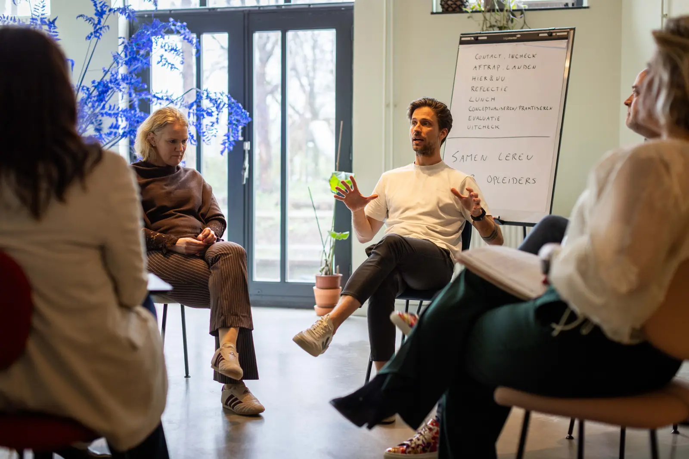
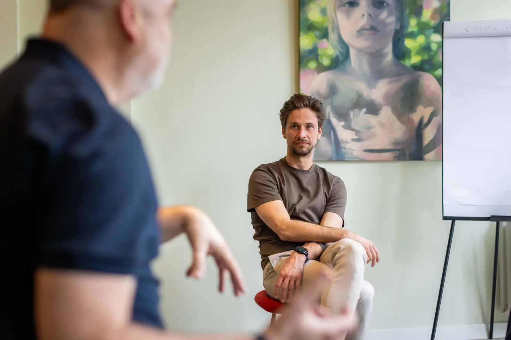
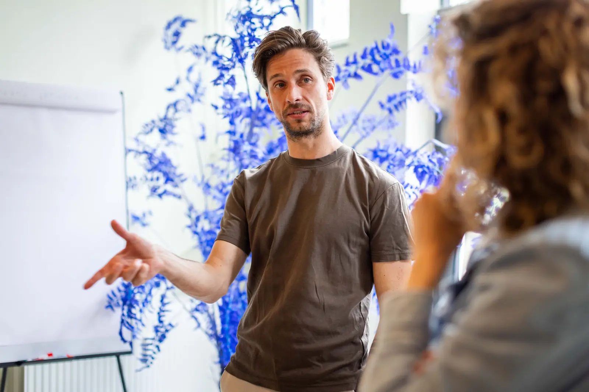
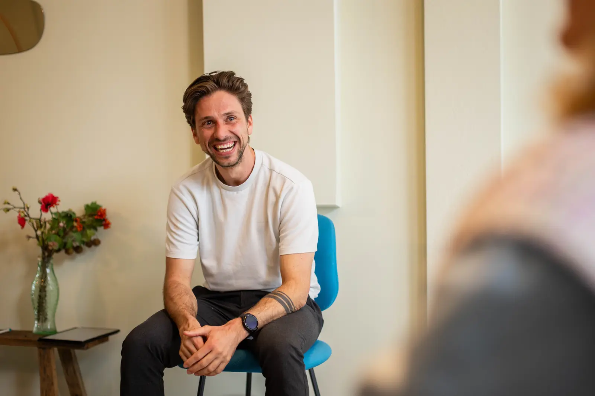
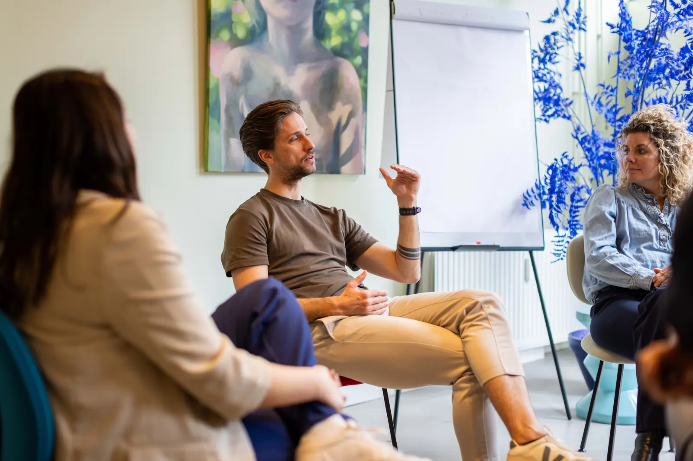

Ik
Jezelf en je eigen patronen leren kennen, zonder een patroon meteen te lezen als een oordeel over wie je bent.
Lees meerHoe wij kijken
Een organisatie is voor ons een groep mensen die samen het werk doet. Vol tegenstellingen, gevormd door hun omgeving en door wat er tussen hen gebeurt. Ontwikkeling begint daarom bij de mensen die het werk doen. De organisatie ontwikkelt met hen mee.

Ontwikkeling wordt vaak aangepakt alsof de organisatie een machine is: zet de onderdelen goed neer, druk op een knop en dan gaat het draaien. Bij een machine kun je ernaast gaan staan en een onderdeel vervangen. In een organisatie ben je zelf onderdeel. Het &-teken in onze naam bindt wat in de praktijk snel los wordt gekoppeld: mens & organisatie, leren & werk.
De wereld is te complex om helemaal te snappen. Accepteer de complexiteit, hou vertrouwen en surf mee.

Mensen dragen van nature een drang tot ontwikkeling in zich. Die ontwikkeling gebeurt in de interactie met anderen. In het werk van vandaag raken mensen die drang en elkaar kwijt: achter schermen, in de haast van de dag en in de zoektocht naar grip in kennis, protocollen en modellen. Je ziet het terug in werkdruk, in uitval en in gesprekken die vastlopen op standpunten.
Ontwikkelen in organisaties volgt hetzelfde patroon. Op een training gaat het over weten hoe je feedback geeft, terwijl er in die groep op dat moment feedback te ervaren is. Drie mensen schrijven “onze visie op leren” en op de werkvloer herkent niemand zich erin. Een leidinggevende praat over “mijn team” alsof zij er zelf buiten staat.
Vier waarden
Vertrouwen in het goede is de basis van ieder leerproces. Iedereen heeft een eigen verhaal: gedrag dat lastig lijkt, heeft altijd een reden. We maken heldere afspraken over samenwerking en rollen, en bespreken die opnieuw wanneer dat nodig is. Eerlijkheid hoort daarbij: we zeggen wat we zien, ook als het spannend is. En we vertrouwen erop dat mensen en groepen het echt zelf kunnen: de groep bepaalt de richting, wij helpen bij het navigeren.
‘Ubuntu: ik ben, omdat wij zijn.’ Verbinding is voor ons het besef dat we van elkaar afhankelijk zijn: het gaat niet om jou of mij. Het is jou & mij: wij. Daarbij maakt iedereen deel uit van systemen als gezin, team en organisatie; een leertraject wordt duurzaam wanneer die context meedoet. Daarom betrekken we het systeem actief, bijvoorbeeld met driehoeksgesprekken en overleg met leidinggevenden.
Onze achtergrond ligt in veranderkunde: hoe bewegen groepen en hoe beïnvloed je die beweging? We sluiten aan op de energie en het ritme van de groep, want dan ontstaat er iets wat precies past bij dat moment. We leren door te doen: eerst ervaren en reflecteren, daarna de theorie. En beweging is een constante: mensen en groepen veranderen voortdurend, onze werkwijze beweegt daarin mee.
Bewust spel en momenten zonder strak doel. Niet omdat het luchtig moet blijven, maar omdat juist in die ruimte, zonder prestatiedruk, de mooiste inzichten ontstaan.


In de ontwikkeling van mensen werken we op drie lagen die elkaar versterken.
Jezelf en je eigen patronen leren kennen, zonder een patroon meteen te lezen als een oordeel over wie je bent.
Lees meerElkaar werkelijk als mens zien, spanning uithouden en het gesprek voeren dat je liever vermijdt.
Lees meerVerandering zien als de constante en je eigen handelingsruimte vinden in een groep die altijd in beweging is.
Lees meerWanneer mensen zich in deze drie lagen ontwikkelen, ontstaat in organisaties meer ruimte voor creativiteit, diversiteit en het pakken van verantwoordelijkheid. Die beweging in gang brengen geeft ons energie en daar ligt ons vakmanschap.

Wij willen dat ontwikkelen in organisaties verschuift: van kennis zenden, competenties afvinken en gedrag toetsen, naar leren vanuit ervaring, dialoog en het werk zelf. Kennis, structuur en competenties houden daarin hun plek. Het is en-en. De balans ligt nu te veel aan de sturende kant.
Voor onze programma's betekent dit dat ieder programma op maat wordt ontworpen voor een specifieke groep. Een vast kader met heldere doelen geeft houvast. Binnen dat kader is ruimte voor wat er in het contact met de groep ontstaat: meer sturing bij een beginnende groep, meer loslaten bij een gevorderde.